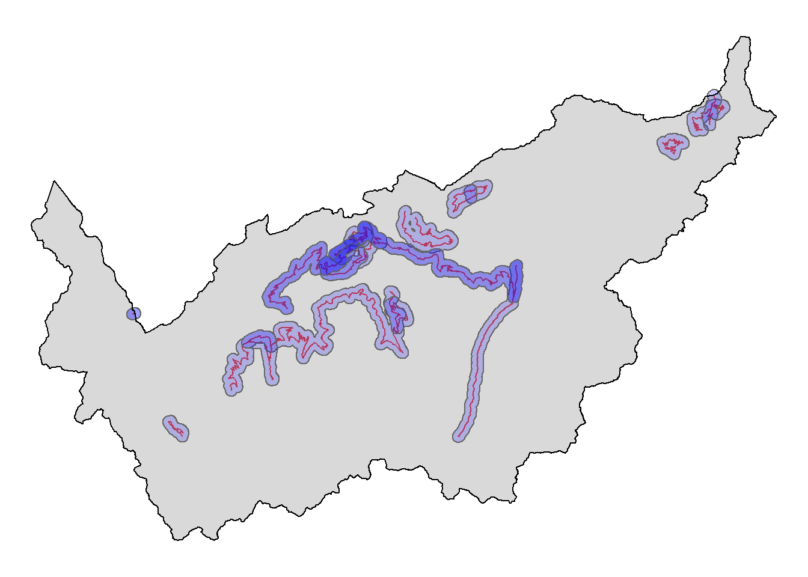
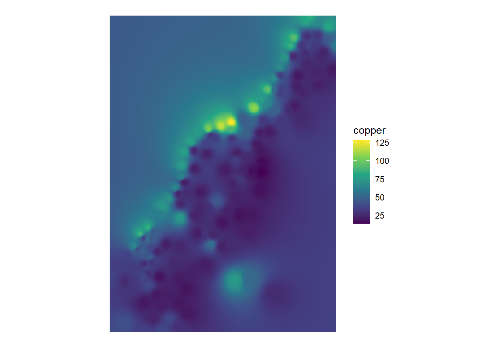

7.1 Raster Interpolation Toolset
library(sp)
library(sf)
library(tidyverse)
library(stars)
data(meuse)
meuse_sf <- meuse %>%
st_as_sf(coords = c("x","y"))7.1.1 IDW
my_idw <- function(groundtruth,column,cellsize, nmax = Inf, maxdist = Inf, idp = 2, extent = NULL){
require(gstat)
require(sf)
require(raster)
if(is.null(extent)){
extent <- groundtruth
}
samples <- st_make_grid(extent,cellsize,what = "centers") %>% st_as_sf()
my_formula <- formula(paste(column,"~1"))
idw_sf <- gstat::idw(formula = my_formula,groundtruth,newdata = samples,nmin = 1, maxdist = maxdist, idp = idp)
idw_matrix <- cbind(st_coordinates(idw_sf),idw_sf$var1.pred)
ras <- raster::rasterFromXYZ(idw_matrix)
if(all(grepl("polygon",st_geometry_type(extent),ignore.case = TRUE))){
ras <- raster::mask(ras,st_as_sf(st_zm(extent)))
}
ras
}meuse_idw <- my_idw(meuse_sf,"copper",cellsize = 10,idp = 3)## [inverse distance weighted interpolation]ggplot() +
geom_stars(data = st_as_stars(meuse_idw)) +
scale_fill_viridis_c() +
theme_void() +
labs(fill = "copper") +
coord_equal()
7.1.2 Kriging
my_krige <- function(groundtruth,column,cellsize, nmax = Inf, maxdist = Inf, extent = NULL){
require(gstat)
require(sf)
require(raster)
if(is.null(extent)){
extent <- groundtruth
}
samples <- st_make_grid(extent,cellsize,what = "centers") %>% st_as_sf()
my_formula <- formula(paste(column,"~1"))
idw_sf <- gstat::krige(formula = my_formula,groundtruth,newdata = samples,nmin = 1, maxdist = maxdist)
idw_matrix <- cbind(st_coordinates(idw_sf),idw_sf$var1.pred)
ras <- raster::rasterFromXYZ(idw_matrix)
if(all(grepl("polygon",st_geometry_type(extent),ignore.case = TRUE))){
ras <- raster::mask(ras,st_as_sf(st_zm(extent)))
}
ras
}meuse_krige <- my_krige(meuse_sf,"copper",cellsize = 10,nmax = 30, maxdist = 500)## [inverse distance weighted interpolation]ggplot() +
geom_stars(data = st_as_stars(meuse_krige)) +
scale_fill_viridis_c(na.value = NA) +
theme_void() +
labs(fill = "copper") +
coord_equal()
7.1.3 Natural Neighbor
Nearest Neighbor:
meuse_thiessen <- st_voronoi(st_union(meuse_sf))
meuse_thiessen <- st_cast(meuse_thiessen)
meuse_bbox <- meuse_sf %>%
st_bbox() %>%
st_as_sfc()
meuse_thiessen <- st_intersection(meuse_thiessen,meuse_bbox)
meuse_thiessen <- st_as_sf(meuse_thiessen)
meuse_thiessen <- st_join(meuse_thiessen,meuse_sf)
ggplot() +
geom_sf(data = meuse_thiessen, aes(fill = copper)) +
geom_sf(data = meuse_sf) +
scale_fill_viridis_c() +
theme_void()